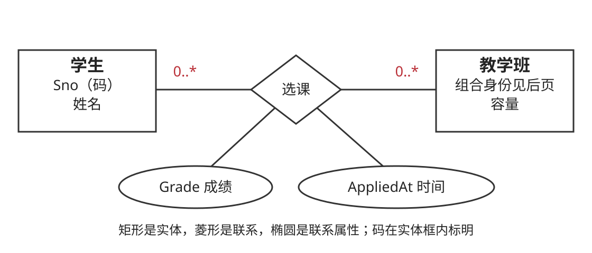
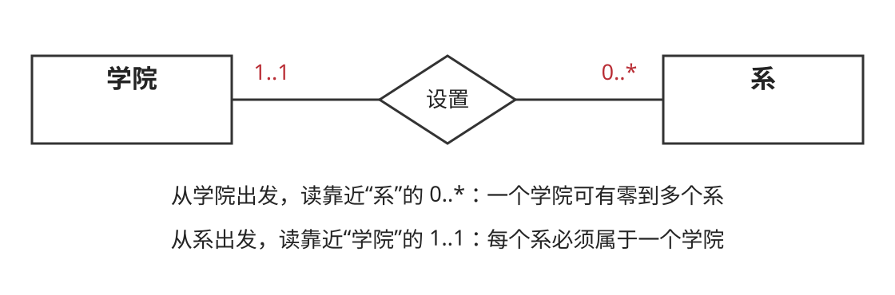
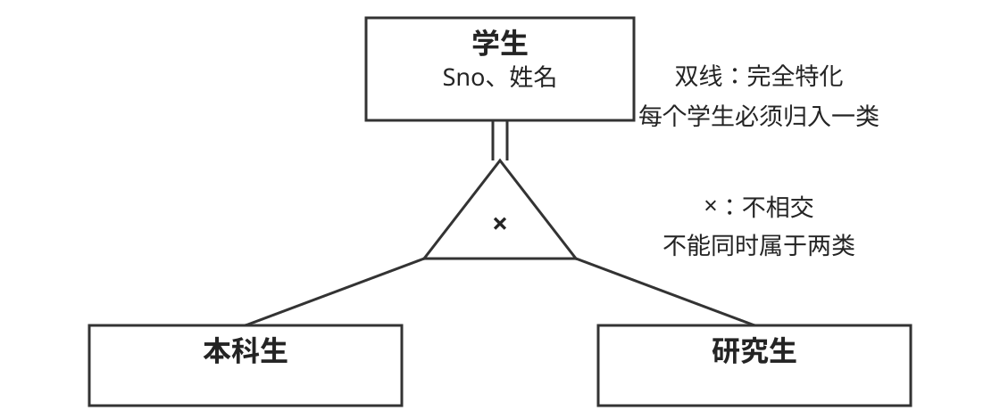
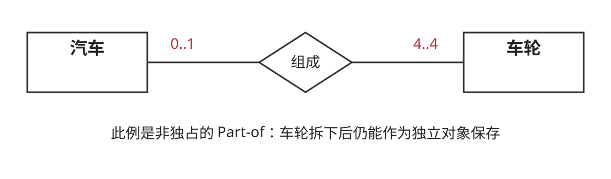
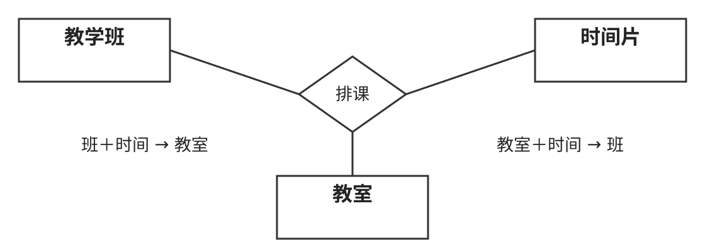
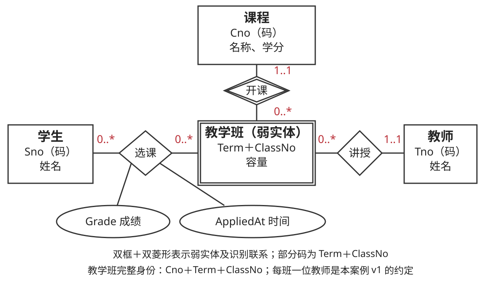

真实充分
保留学生、教学班、课程和教师，以及选课、开课和讲授联系
把选课需求画成能解释、能检查、能转表的 E-R 图
 VER. 2610
Built with impress.js
VER. 2610
Built with impress.js
把 7.1 的选课需求画成可检查、可转表的 E-R 图
图中先说清学生选哪个班、班有多大、由谁授课，再决定怎样建表
保留学生、教学班、课程和教师，以及选课、开课和讲授联系
教务人员能指出“每班一位教师”是否符合本次业务约定
若允许多人授课，应能定位讲授联系及其基数
码、联系属性和参与约束足够明确，下一节能据此写出关系模式
有独立身份、自己的属性或其他联系时，应考虑单独建实体型
| 对象 | 只作属性的情形 | 本次需要独立实体的理由 |
|---|---|---|
| 专业 | 只显示一个专业名称 | 若记录专业号、负责人和培养方案，就需要专业实体 |
| 职称 | 只显示教师职称文字 | 若管理对应待遇规则，可单独建模 |
| 教学班 | 极简系统只记课程的一段班次说明 | 本案例每班有容量、教师和选课记录，必须单独建模 |
“一个值”不能证明它只能是属性；还要看是否需要独立管理这个对象
本页各例均有明确业务约定；先修联系的两端都是课程
| 联系 | 从左端询问 | 从右端询问 |
|---|---|---|
| 学院—院长 1:1 | 一个学院至多有一名院长 | 一位院长只负责一个学院 |
| 课程—教学班 1:n | 一门课程可开多个教学班 | 一个教学班属于一门课程 |
| 学生—教学班 m:n | 一个学生可选多个班 | 一个教学班可有多个学生 |
| 先修（递归 m:n） | 一门课可有多门先修课 | 多门课可共用一门先修课 |
学生换一个班，成绩就可能不同；因此 Grade 连接到选课菱形

姓名由学生决定，容量由教学班决定，成绩和选课时间由这次选课决定
| 学生 Sno | 教学班身份 | Grade | AppliedAt |
|---|---|---|---|
| 20260001 | C001／2026-1／01 | 80 | 2026-09-01 09:00:00 |
| 20260001 | C002／2026-1／01 | 95 | 2026-09-01 09:02:00 |
若把 Grade 放进学生实体，同一个学生的 80 和 95 就无处区分；放进教学班也无法区分班内学生
从学院出发读系这一端，从系出发读学院这一端

星号表示多个，0 表示允许没有；不要把“学院自身参加几次”写在学院旁边
7.1 约定班号只在某门课、某个学期内唯一，因此教学班依赖课程标识
| 课程 Cno | 学期 Term | 班号 ClassNo | 是否同一个教学班 |
|---|---|---|---|
| C001 | 2026-1 | 01 | 第一个班 |
| C002 | 2026-1 | 01 | 课程不同，是另一个班 |
| C001 | 2026-2 | 01 | 学期不同，也是另一个班 |
课程是所有者；Term＋ClassNo 是教学班在课程范围内的部分码
Cno＋Term＋ClassNo；图中用双框画教学班、双菱形画识别联系
扩展示例只讨论本科生与研究生，并约定每人恰属其中一类

子类继承 Sno 和姓名；若还有其他学生类型，这两个子类就不再是完全特化
扩展示例约定每辆汽车装四个车轮，每个车轮至多装在一辆车上

非独占部分可以脱离整体；独占部分依赖整体存在。不能仅凭“是组成部分”就断定可以级联删除
这是新增排课需求的扩展示例，超出 7.1 的选课 v1 范围

同一班同一时段只能在一间教室；同一教室同一时段也只能安排一个班
A、B 代表两个不同教学班；以下三条原始排课记录都符合约束
| 行号 | 教学班 | 时间片 | 教室 |
|---|---|---|---|
| ① | A | 周一 1–2 节 | R101 |
| ② | A | 周三 1–2 节 | R102 |
| ③ | B | 周一 1–2 节 | R102 |
三个部门都提到“班”，但必须查清它们使用的身份和业务范围
| 局部视角 | 需要的对象与联系 | 合并前要确认 |
|---|---|---|
| 教务开课 | 课程、教学班、开课 | 班的完整身份是否一致 |
| 教师授课 | 教师、教学班、讲授 | 每班一位教师，还是多人授课 |
| 学生选课 | 学生、教学班、选课 | 成绩、时间是否属于同次选课 |
核实三处“教学班”采用同一身份后，合并这个实体，同时保留开课、讲授和选课三种联系
课堂 v1 的统一决定以 7.1 需求样本为准，不能默认已经得到真实学校确认
| 冲突 | 两份局部材料的差异 | 本案例的统一决定 |
|---|---|---|
| 属性 | 班号用整数 1，或文本 01 | 用两位文本 01–99，保留前导零 |
| 命名 | 行政班、教学班都叫“班级” | 分开命名；选课只引用教学班 |
| 结构 | 一位教师授课，或多人授课 | v1 每班一位教师；多人授课为扩展 |
若采纳多人授课，讲授改为 m:n，并可增加“是否主讲”联系属性；不能只改图中一个数字就结束
四类实体、三种联系全部保留；数字均按教材的对端读法标注

扩展统计约定：同一课程及格一次就计学分，重复修读不重复计入
| 原始事实变化 | 应有的统计结果 | 只改原记录的后果 |
|---|---|---|
| C001 为 3 学分，成绩 59→60 | 首次通过，已修学分加 3 | 缓存仍少 3 学分 |
| 再次通过 C001 | 这门课仍只计 3 学分 | 按通过次数累加会重复计分 |
| C001 学分 3→4 | 按本例现行学分口径重算 | 缓存仍保留旧学分 |
先约定及格线、重修和学分口径；若保留统计值，成绩、学分或选课记录变化时都要重算并核对
最终产物是完整 E-R 图，加上图中无法写全的业务约束